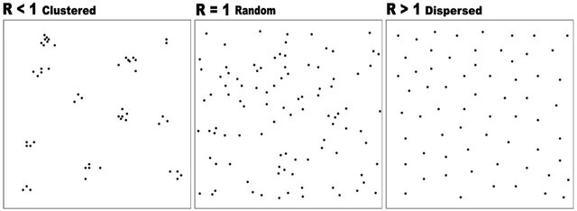
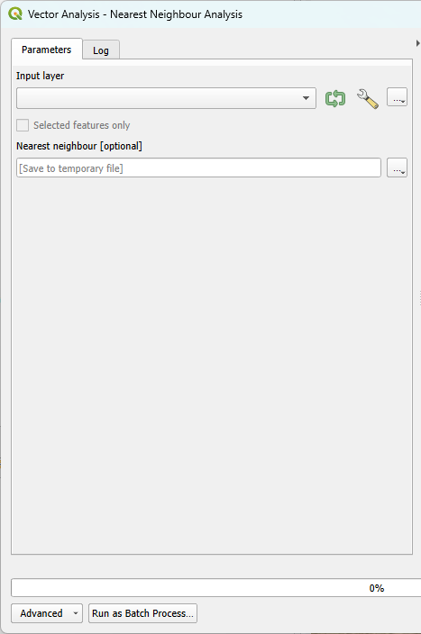
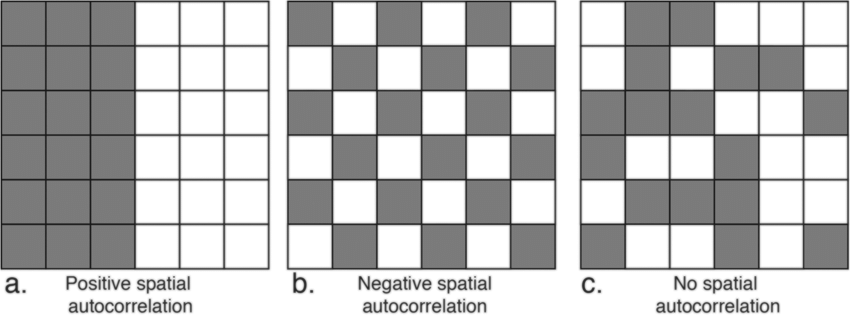
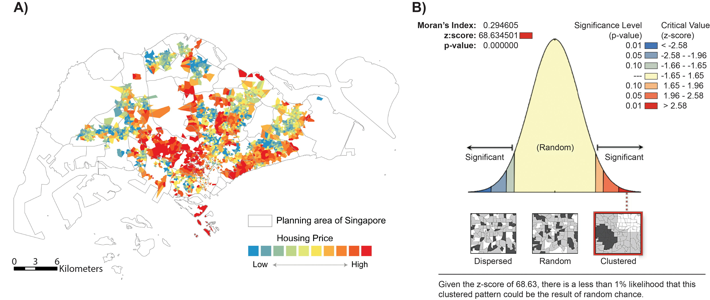
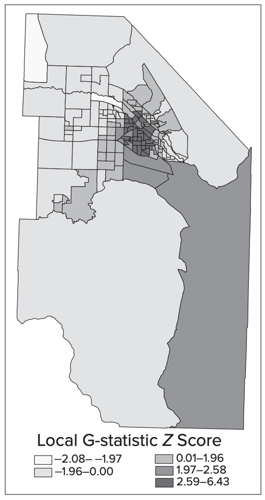
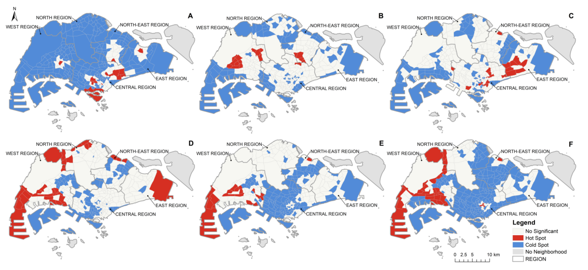

class: center <br> # Spatial Analysis of Urban Data ## Lecture and Tutorial: Spatial Pattern Analysis [Bayi Li](mailto:barryli081@gmail.com) <br> <button onclick="window.location.href='index.html'">Go Back to Menu</button> .toc-wrapper[ <div class="toc"> <a href="#pattern" class="toc-item">Pattern Analysis</a> <a href="#nearest-neighbour" class="toc-item">Nearest Neighbour Analysis</a> <a href="#autocorrelation" class="toc-item">Spatial Autocorrelation</a> <a href="#hotspot" class="toc-item">Hot Spot Analysis</a> <a href="#comparison" class="toc-item">Comparing Methods</a> </div> ] --- name: pattern ## Pattern Analysis Mapping can give a first visual impression of a distribution, but visual clustering alone is not enough. Spatial statistics help us test whether an observed pattern is random, regular, or clustered. Pattern analysis studies the spatial arrangement of points or polygons in two-dimensional space. --- name: nearest-neighbour .right_half[ <figure> <p></p> </figure> ] ## Pattern Analysis Methods I ### Nearest Neighbour Analysis Nearest neighbour analysis uses the distance from each point to its closest neighbouring point to determine whether a point pattern is random, regular, or clustered. <p> R = <span>d<sub>obs</sub></span> / <span>d<sub>exp</sub></span> </p> - **R < 1**: clustered - **R ≈ 1**: random - **R > 1**: dispersed Z-scores and p-values help judge statistical significance. --- .right_half[ <figure> <p></p> </figure> ] ### Practice: Nearest Neighbour Analysis **Research Question**: <xL>Are reported crimes in New York City spatially clustered, randomly distributed, or dispersed?</xL> --- name: autocorrelation ## Pattern Analysis Methods II ### Spatial Autocorrelation Spatial autocorrelation measures the relationship among values of a variable according to their spatial arrangement. This is useful when we want to know whether similar values occur near one another in space. <div align="center"> <figure> <p></p> <figcaption>Different types of spatial autocorrelation.</figcaption> </figure> </div> --- ### Application of Spatial Autocorrelation <div align="center"> <figure> <p></p> <figcaption>Example application of Global Moran's I to a spatial surface.</figcaption> <figsubcaption>Source: 10.1080/24694452.2021.1935208</figsubcaption> </figure> </div> --- name: hotspot .right_half[ <figure> <p></p> </figure> ] ## Pattern Analysis Methods III ### Hot Spot Analysis Hot spot analysis identifies statistically significant clusters of high or low values. **G-statistic output** is often summarised through z-scores and p-values: | z-score | Interpretation | |---|---| | > +1.96 | Hot spot at 95% confidence | | < -1.96 | Cold spot at 95% confidence | | Near 0 | No significant clustering | --- ### Application of Hot Spot Analysis <div align="center"> <figure> <p></p> <figcaption>Hot spot analysis of COVID-19 cases in Singapore.</figcaption> <figsubcaption>Source: 10.3390/ijgi11030152</figsubcaption> </figure> </div> --- name: comparison ## Comparing Pattern Analysis Methods - **Nearest Neighbour Analysis** uses location only - **Spatial Autocorrelation** uses location plus attribute values - **Hot Spot Analysis** identifies local clusters of high or low values <xL>LISA can identify both clusters and outliers, while hot spot analysis focuses on clusters of extremes.</xL> --- ## Reading Material - Kang-tsung Chang and Carl M. Chang (2019), Introduction to Geographic Information Systems, 9th Edition, Chapter 11 - Geospatial Analysis, 7th Edition, 2024 - de Smith, Goodchild, Longley et al. https://spatialanalysisonline.com/ --- <xL>Previous Lecture: </xL><button onclick="window.location.href='vector.html'">Go to Spatial Analysis of Vector Data</button> <xL>Continue with Lecture: </xL><button onclick="window.location.href='raster.html'">Go to Spatial Analysis of Raster Data</button> <xL>Back to course menu: </xL><button onclick="window.location.href='index.html'">Go Back to Menu</button>